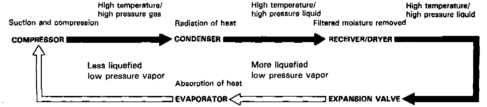
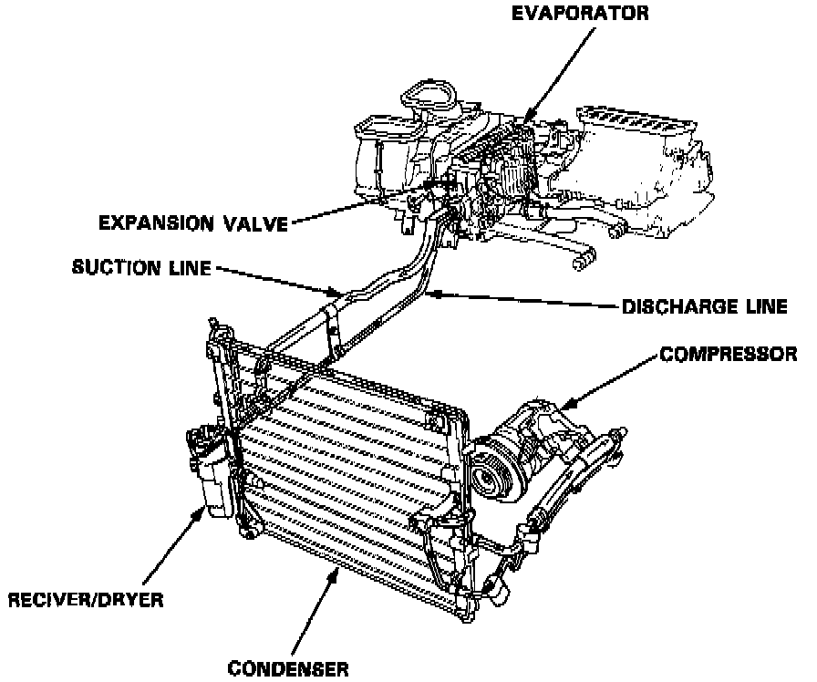

Air Conditioner


AIR CONDITIONER
The air conditioner removes heat from the passenger compartment by circulating refrigerant through the system as shown. The air conditioning system is controlled by one of two electronic climate control systems: Manual Heating and Air Conditioning; or Automatic Climate Control.
HFC-134a (R-134a) CAUTIONS
This car uses R-134a refrigerant which does not contain chlorofluorocarbons. Pay attention to the following service items:
- Do not mix refrigerants R-12 and R-134a. They are not compatible.
- Use only the recommended polyalkyleneglycol (PAG) refrigerant oil (ND-OIL 8: P/N 38899-PR7-AO1) designed for the R-134a compressor. Intermixing the recommended (PAG) refrigerant oil with any other refrigerant oil will result in compressor failure.
- All A/C system parts (compressor, discharge line, suction line, evaporator, condenser, receiver/dryer, expansion valve, 0-rings for joints) have to be proper for refrigerant R-134a. Do not confuse with R-12 parts.
- Use a halogen gas leak detector designed for refrigerant R-134a.
- R-12 and R-134a refrigerant servicing equipment is not interchangeable. Only use a Recovery/Recycling/Charging System that is U.L.-listed and is certified to meet the requirements of SAE J221O to service R-134a air conditioning systems.
- Always recover the refrigerant R-134a with an approved Recover/Recycling/Charging System, before disconnecting any A/C fitting.